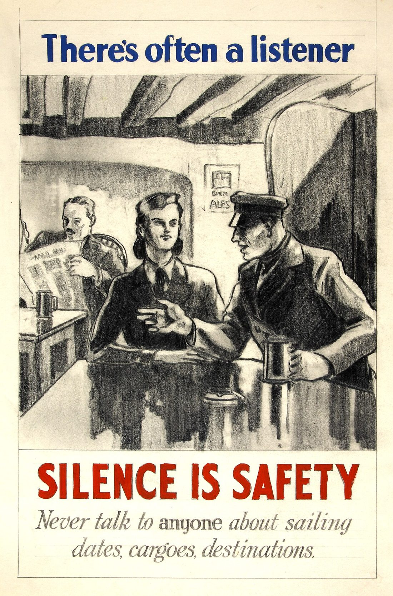

🧠 資訊與心理韌性
🕵️ 資訊戰與假訊息辨識
在現代衝突裡，假訊息往往比飛彈更早抵達。製造恐慌、瓦解信任、挑起對立——這些「認知作戰」的目的，是讓你在真正的危險來臨前就先亂了陣腳。好消息是：辨識假訊息是一種可以練習的技能。這篇教你幾個能在滑手機時就用上的判斷步驟，讓你不被謠言帶著走，也不成為散播的幫兇。

▲ 二戰時期的反謠言宣傳海報——「謠言傷人」並非新鮮事，只是如今換到了社群媒體上、傳得更快。圖片：英國新聞部（作者不詳），Wikimedia Commons，公有領域。
核心心法：先停三秒
假訊息最強的武器不是內容，而是你的情緒。愈是讓你瞬間憤怒、恐慌、急著分享的訊息，愈可能是被刻意設計來操縱你的。所以第一招最簡單也最有效：看到驚人消息，先停三秒，不要立刻轉傳。
💡 停下來問自己三個問題
- 這是誰發的？有沒有具名、可查證的來源？
- 有沒有原始出處可以點開？還是只是「網路瘋傳」「朋友說」？
- 其他獨立可信來源有沒有同樣說法？只有一處在講就先存疑。
五步驗證法
把「停三秒」展開成可操作的步驟，遇到可疑訊息時逐項過一遍：
| 步驟 | 怎麼做 | 紅旗警訊 |
|---|
| 1. 查來源 | 看發文帳號是否可信、具名、可回溯 | 農場網址、匿名、剛註冊的帳號 |
| 2. 找原文 | 順著連結找到最原始的出處 | 沒有連結、截圖沒有出處 |
| 3. 交叉比對 | 用關鍵字搜尋，看多個來源是否一致 | 只有單一來源、說法互相矛盾 |
| 4. 驗圖驗片 | 反向圖片搜尋、看畫面細節是否吻合 | 舊圖新用、畫面與宣稱時地不符 |
| 5. 對照官方／查核 | 比對政府公告與事實查核組織 | 與官方明顯衝突、已被查核為假 |
照片與影片：眼見不一定為憑
危機中最常見的假訊息，是「真圖假脈絡」——照片本身是真的，但被冠上錯誤的時間、地點或事件。辨識方法：
- 反向圖片搜尋：把圖片丟進搜尋引擎，看它第一次出現是什麼時候、原本的脈絡是什麼。若一張「今天的戰況」照片其實三年前就在網路上，那就是舊圖新用。
- 看畫面細節：天氣、季節、招牌文字、車牌、路標、建築風格，是否和宣稱的時間地點相符？對不上就是警訊。
- 當心生成式 AI：AI 偽造的圖片與影片愈來愈逼真，留意不自然的手指、文字、光影與過度完美的構圖，但別只靠肉眼——交叉比對來源仍是關鍵。
- 影片看剪輯：注意是否被去頭去尾、抽掉脈絡，或配上與畫面無關的不實字幕與旁白。
認識「認知作戰」的常見手法
假訊息在戰時不是零散出現，而是有組織地投放。認得這些套路，就更難被操縱：
- 情緒轟炸：刻意放大恐懼、絕望或憤怒，讓你來不及思考就行動。
- 灌水同步：同一套說法在短時間內被大量帳號同步散播，營造「大家都這麼說」的假象。
- 製造對立：挑起族群、政黨、世代之間的仇恨，瓦解內部團結。
- 假冒權威：冒用官方單位、名人、媒體的名義發布假消息。
- 唱衰放棄：反覆散布「抵抗沒用」「已經完了」的訊息，削弱抵抗意志。
⚠ 你的轉傳，可能正是武器的一部分
認知作戰仰賴一般民眾「好心提醒」式的轉傳來擴散。在查證之前按下分享，你就成了散播鏈的一環。寧可晚幾分鐘確認，也不要讓假訊息透過你傳給更多人。真的重要的資訊，多等幾分鐘查證並不會失效。
戰時特別要警覺的幾類假訊息
衝突期間，有幾種假訊息最常出現、殺傷力也最大，因為它們直接影響你的行動決策。事先認得，就不容易上當：
- 假撤離／假避難令：偽造官方名義叫你往某方向逃，可能把人群引向更危險的地方或製造踩踏。撤離指示務必以政府正式管道確認，別憑一則轉傳就行動。
- 假物資短缺：散布「某物資即將斷貨」引發搶購與恐慌，既擾亂社會、也讓真正需要的人買不到。理性的儲備見〈居家儲備〉，不必因謠言恐慌搶購。
- 假傷亡與假戰況：誇大或虛構的死傷、戰敗畫面，目的是打擊士氣、製造絕望。這類「唱衰放棄」的訊息要格外警覺。
- 假投降／假談判：偽造官方宣布投降或停火，動搖抵抗意志或誘使民眾放下戒備。
- 假冒親友求救：盜用帳號假裝親友急需匯款或個資，趁亂行騙。遇到此類訊息，用另一個管道向本人再確認。
共同點是：它們都想讓你立刻行動、來不及查證。愈是急迫、愈是駭人的「指示」，愈要先透過官方管道確認。
戰時的資訊紀律
危機當下，建立幾個簡單習慣能大幅降低被誤導的機率：
- 認定少數可信來源：政府官方管道、具公信力的媒體與事實查核組織，優先看它們。
- 保留接收官方警報的能力：手機災防告警、收音機——斷網時尤其重要（見〈通訊中斷時如何求救與接收資訊〉）。
- 不因單一謠言就做重大決定：例如是否撤離，應以官方指示為主（見〈該撤離還是就地避難〉），而非某則瘋傳訊息。
- 照顧情緒：持續暴露在恐慌訊息中會累垮你的判斷力，適時放下手機（見〈災難中的心理韌性〉）。
✅ 轉傳前 10 秒自問
- 這讓我很激動嗎？（愈激動愈要查）
- 我點得到原始出處嗎？
- 其他可信來源也這樣說嗎？
- 圖片／影片的時間地點對得上嗎？
- 不確定的話——那就先不要轉。
常見問答 FAQ
Q1. 看到驚人消息第一步做什麼？
先停三秒、別急著轉。愈讓你激動的訊息愈要查來源與交叉比對。
Q2. 怎麼判斷來源可不可信？
看它是否具名、可回溯、指向原始出處；「網路瘋傳」「朋友說」而無出處的要存疑，並比對多個獨立來源。
Q3. 照片影片怎麼查真假？
用反向圖片搜尋查最早出現的脈絡，檢查畫面細節是否吻合宣稱的時地，並當心 AI 偽造與去脈絡剪輯。
Q4. 什麼是認知作戰？
用大量假訊息操縱情緒、製造對立與恐慌、削弱抵抗意志的手法；關鍵是察覺自己的情緒正被利用。
Q5. 官方和謠言衝突信誰？
以政府正式管道與事實查核組織為準，並持續接收官方更新，別讓來源不明的謠言主導你的決定。
權威來源
※ 本文為一般媒體識讀與資訊安全參考，整理自台灣事實查核中心、NCC、Cofacts 等公開資源，不能取代官方即時查證與指示。重大決定請以政府正式公告為準。